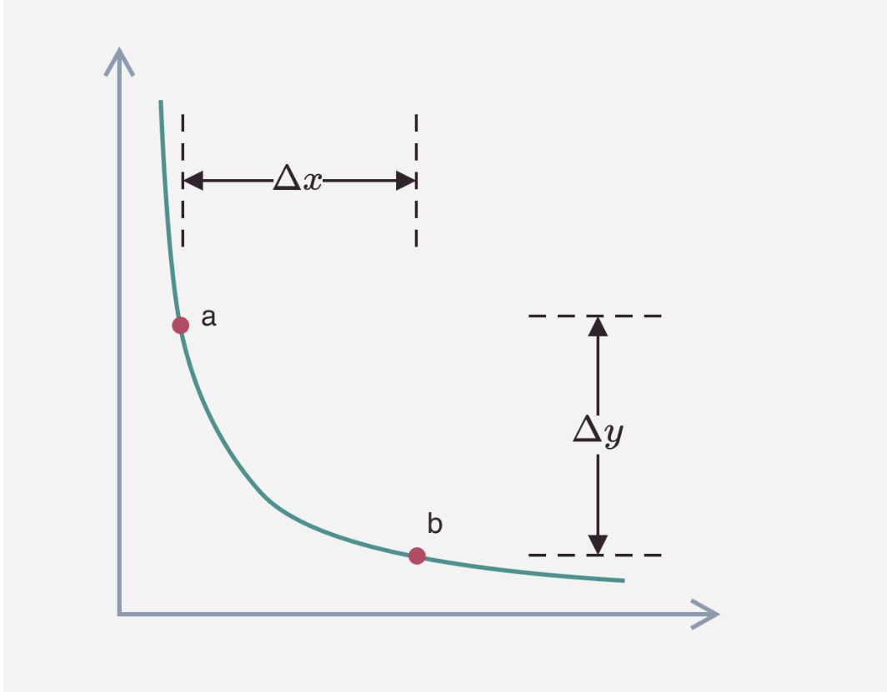
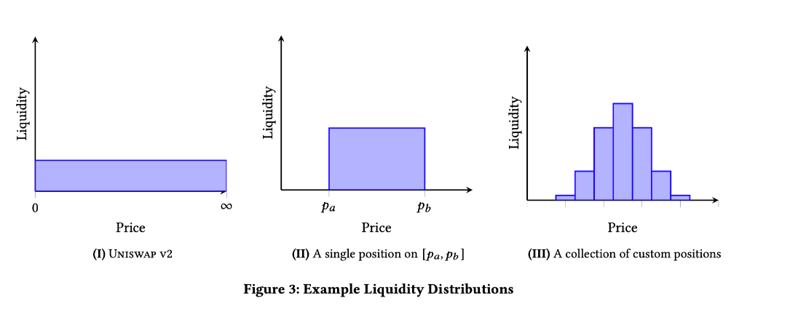
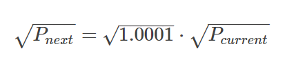
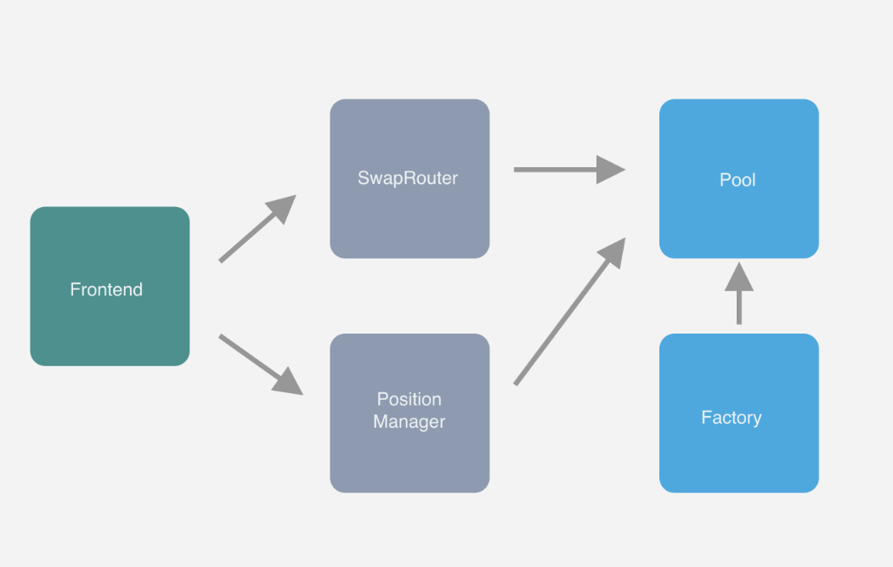

前置阅读资料：
设计原理
官方的白皮书已经比较详尽的描述了V3的设计原理，这里仅对白皮书中的内容做一些补充，包含本人对其中一些机制的理解和思考。
Uniswap V2版本使用x·y=k 这样一个简洁的公式实现了 AMM Dex ,正是由于简洁易用，使其在短短几年时间迅速成为DeFi领域的龙头项目。
简单来说,官方认为V2的版本最大的痛点是资金利用率（capital Efficiency） 太低，V3的版本再解决这个问题的同时，还带来了新的改进，总体总结如下：
- 可灵活选择价格区间提供流动性
- 更好用的预言机
- order book功能
- 灵活的费率
提升资金利用率
解决资金利用率问题之前，我们可以观察到大部分的交易对的价格，在大部分时间内都只是在一个固定的范围内波动，例如 ETH/USDC 交易对，在最近一个月的时间都是在 1500 ~ 2000 ETH/USDC,更加极端的例子是DAI/USDC ,大部分时间都只是在 1.001 ~ 1.002 DAI/USDC 范围内活动。
V2的弊端
我们先来看看V2的资金利用率是怎么样的，假设ETH/DAI 交易对的实时价格为1500 ,交易对的流动性池中有4500DAI 和3 ETH ,根据 x⋅y=k 可以算出池
内的K值：
假设x 表示DAI，y表示ETH，即初始阶段 $x_1 = 4500 \quad y_1 = 3 $ 当价格下降到 1300 DAI/ETH 时：
得出 $x_2 = 4192.54 ， y_2 = 3.22\frac {\Delta_x}{x_1} = 6.84 $ %,同样的方式，当价格变为2200 DAI/ETH时，资金利用率为21,45%
也就是说，在大部分时间内池子中的资金利用率低于25%，这个问题对于稳定币的流动性池更加严重。
解决方案
V3版本的解决方案是允许用户只在一段价格区间内提供流动性。如下图：
上图展示了用户选择在价格[a,b]之间提供流动性时，通过虚拟token的参与，将曲线 f(real) (橘色)向右上方移动至 f(virtual)（绿色），实现了价格计算的一致性（既满足 x · y = k）
流动性聚合
上面我们说了，通过引入虚拟token的概念，让用户可以在某个价格区间内提供流动性，而每个用户提供的流动性都可能设置不同的价格，这样一来一个交易对的池子中就包含了多个不同的流动性
因此从单个交易池的视角来看，Uniswap V3实际上扮演的角色是一个交易聚合器，当发生交易时，此交易会拆分成多个，通过池中多个不同的流动性来进行交易，最后将交易结果聚合，完成最终的交易过程
从聚合器的角度看，在交易发生之前，池中每一个流动性中的token price是一致的，那么我们需要让交易结束后池中的每一个流动性的token price仍然是一致的（当然这里仅包含
所有在区间内的流动性），因此V3的交易过程会围绕价格来进行，这样可以保证所有的流动性的价值一致，事实上这就是AMM交易聚合的行为一致，因此我们可以把Uniswap V3理解成单个交易池中不同流动性的交易聚合器。
交易过程
V2版本
在V2版本中，用户与一个交易对发生交易时，假设用户提供x token，资金量为 Δx ，AMM 需要计算出用户可以得到的y token,即）Δy ，如下图所示，池中资金从a点随着曲线移动到b点：

可以通过下面步骤计算 Δy:
具体的实现，参考 V2代码实现
V3版本
在V3版本中，因为一个交易池中会有多个不同深度的流动池（每一个可以单独设置交易价格区间），因此一次交易的过程可能跨越多个不同的深度：

如上图最右边所示，当价格发生变化时，流动池中的总流动性也会随之变化，因此V3版本流动池中资金的关系不能像V2版本一样用一个平滑的bonding curve曲线来表示。那么该如何计算呢？
前面我们说过，V3的行为类似一个交易聚合器，他需要保证池中所有的流动性的价格再交易前后一致，因此V3会围绕池中的代币价格来进行。
对于一个流动性来说，流动性大小可以用k表示，即 k = x · y 用P表示x的价格，即 P = y / x ,当使用x token兑换y token时，我们需要进行如下计算：
交易至指定价格（不可以超出此流动性的边界价格）P ，需要的 x token 数 Δx ，可以获得的 y token 数 Δy
给定 x token 数 Δx （假设不会引发价格超出此流动性的边界价格），可以获得的 y token 数 Δy ，以及最终的价格 P
这样一来计算过程并不需要关注流动性中的 x token 和 y token 余额，通过 k 值和价格 P 就可以完成交易过程的计算。
为了减少计算过程中的开根号运算，v3 合约直接存储 P−−√ 的值，同时合约中没有存储 k 的值而是存储 L=k−−√ ，通过 L 来表示池中当前的流动性大小（存储 L 还有一个好处是减少溢出的可能性）。
在实际交易过程中，一个交易会通过多个流动性聚合完成。因此上述的公式会进行聚合完成，即使用当前价格上的流动性总和来进行计算，流动性总和可以这样表示： Ltotal=∑Luser，即将当前价格所在区间内所有流动性大小的总和。
同时，一个交易还可能跨越不同的流动性阶段（即可能超出或者进入某个流动性），因此合约需要维护每个用户提供流动性的价格边界，当价格到达边界时，需要在总流动性上增加或移除对应流动性大小。通过分段计算的方式完成交易结果的计算，具体的实现过程可以参考：Uniswap v3 详解（三）：交易过程
价格精度问题
因为用户可以在任意 $[P_0,P_1]$ 价格区间内提供流动性，Uniswap v3 需要保存每一个用户提供流动性的边界价格，即 $P_0$ 和 $P_1$ 。这样就引入了一个新的问题，假设两个用户提供的流动性价格下限分别是 5.00000001 和 5.00000002，那么 Uniswap 需要标记价格为 5.00000001 和 5.00000002 的对应的流动性大小。同时当交易发生时，需要将 [5.00000001,5.00000002]
作为一个单独的价格区间进行计算。这样会导致：
几乎很难有两个流动性设置相同的价格边界，这样会导致消耗大量合约存储空间保存这些状态
当进行交易计算时，价格变化被切分成很多个小的范围区间，需要逐一分段进行计算，这会消耗大量的 gas，并且如果范围的价差太小，可能会引发计算精度的问题
Uniswap v3 解决这个问题的方式是，将 $[P_min,P_max]$ 这一段连续的价格范围为，分割成有限个离散的价格点。每一个价格对应一个 tick，用户在设置流动性的价格区间时，只能选择这些离散的价格点中的某一个作为流动性的边界价格。
Uniswap v3 采用了等比数列的形式确定价格数列，公比为 1.0001。即下一个价格点为当前价格点的 100.01%，前面我们说过 Uniswap v3 实际存储的是 P−−√
，那么下一个价格与当前价格的关系为

如此一来 Uniswap v3 可以提供比较细粒度的价格选择范围（每个可选价格之间的差值为 0.01%），同时又可以将计算的复杂度控制在一定范围内。
代码架构
Uniswap V3在代码层面的架构和V2基本保持一致，将合约分成了两个仓库：
core仓库的功能主要包含一下2个合约中：
- UniswapV3Factory：提供创建pool的接口，并且追踪所有的pool
- UniswapV3Pool： 实现代币交易，流动性管理，交易手续费的收取，oracle数据管理，接口的实现粒度较低，不适合普通用户使用，错误的调用其中的接口可能会造成经济上的损失。
peirphery 仓库的功能主要包含以下2个合约：
- SwapRouter ： 提供代币交易的接口，它是对UniswapV3Pool 合约中交易相关的接口进一步的封装，前端界面主要于这个合约来进行对接。
- NonfungiblePositionManager ： 用来增加/移出/修改pool的流动性，并且通过NFT token将流动性代币化，使用ERC721 token的原因是同一个池的多个流动性并不能等价值替换（V3的集中流动性功能）。
这些合约间的关系大致如下图：

本系列后续会从常用的 Uniswap V3操作入手，讲解代码调用流程，一般来说，用户的操作都是于uniswap-v3-periphery 开始。
If you like this blog or find it useful for you, you are welcome to comment on it. You are also welcome to share this blog, so that more people can participate in it. If the images used in the blog infringe your copyright, please contact the author to delete them. Thank you !